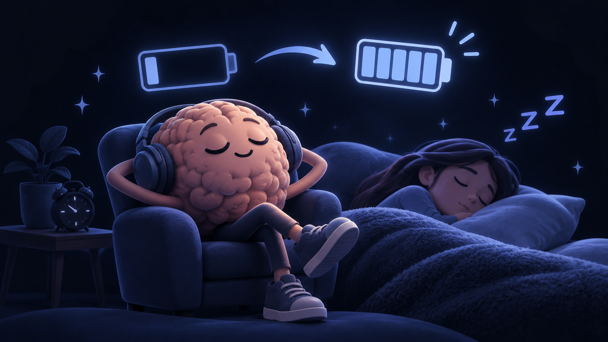
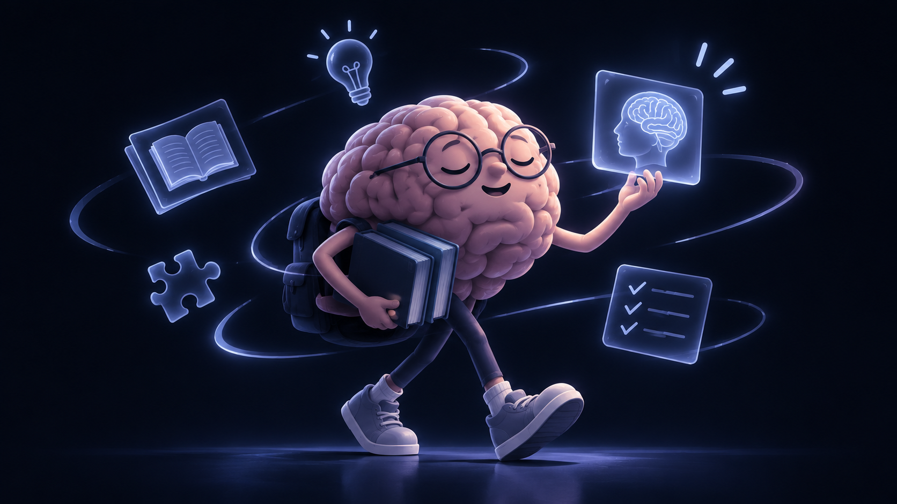
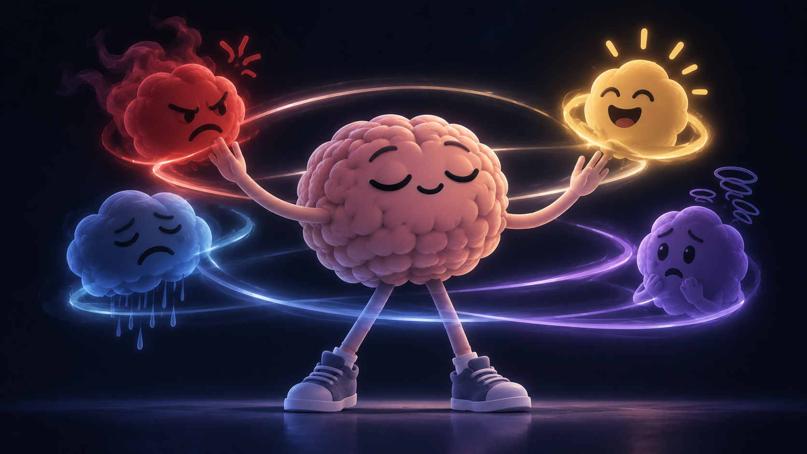
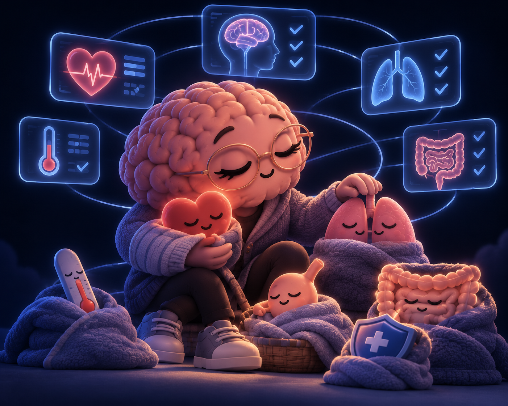

Le sommeil,
un besoin essentiel
Comprendre son rôle, ses différentes phases et son importance pour le corps et l'esprit.
Le sommeil est une fonction naturelle et indispensable au bon fonctionnement de notre corps et de notre cerveau.
Il nous permet de récupérer de l’énergie, de consolider nos souvenirs et de réguler nos émotions.
Nous passons environ un tiers de notre vie à dormir.
Pourtant, même lorsque nous sommes endormis, notre cerveau reste actif et continue de traiter les informations accumulées pendant la journée.
Pourquoi dormons-nous ?
Le sommeil joue plusieurs rôles essentiels dans notre quotidien :

Récupérer : permettre au corps et au cerveau de se reposer

Mémoriser : aider le cerveau à retenir et à organiser les informations

Réguler les émotions : contribuer à notre équilibre émotionnel

Préserver notre santé : soutenir le bon fonctionnement de notre organisme
Le lien entre le sommeil et les rêves
Pendant la nuit, notre sommeil se compose de plusieurs cycles, alternant différentes phases.
Les rêves peuvent survenir à plusieurs moments de ces cycles, même s'ils sont souvent plus intenses et plus faciles à mémoriser pendant le sommeil paradoxal.
Nos rêves peuvent être réalistes, étranges, agréables ou effrayants.
Certains semblent raconter une histoire cohérente, tandis que d'autres mélangent des souvenirs, des émotions et des situations imaginaires.
Mais pourquoi rêvons-nous ?
Comment expliquer les rêves lucides ou cette sensation d'être réveillé sans pouvoir bouger ?
Explorez notre site pour découvrir les mystères du sommeil et des rêves.